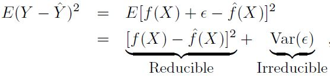

2.1 통계학습이란?
통계학습을 설명하기 위해서 두 가지 예를 들어보도록 한다.
첫 번째로는, 마케팅 과정에서 TV, 라디오, 신문이라는 세 요소를 통해 특정 제품의 광고를 하려고 한다.
이때, 이 세 매체를 통한 광고 예산은 입력변수(Input)로, 매출은 출력변수(Output)으로 정의할 수 있다.
즉, 세 매체에 대한 광고 예산의 조합을 통해 매출을 예측할 수 있는 모델을 만들어볼 수 있다는 것이다.
두 번째로는, 개인의 교육 기간 데이터와 그에 따른 소득 데이터를 통해서 관계를 확인해보려고 한다.
같은 방식으로 이때의 입력변수(Input)는 교육 기간이고, 출력변수(Output)는 소득으로 정의할 수 있다.
1) 매출 = TV 예산 + 라디오 예산 + 신문 예산 + e (error term)
2) 개인의 소득 = 개인의 교육 기간 + e (error term)
이렇듯, 일반적으로 입력(설명, 예측, 독립, feature) 변수는 X로, 출력(반응, 응답, 종속) 변수는 Y를 사용하여 표현한다.
따라서 Y = f(x) + e 라는 수식으로 출력 변수는 입력 변수들의 방정식에 대한 결과값이라고 이야기할 수 있다.
또한 함수 f는 2개 이상의 입력 변수에 표현되며, 통계학습은 이 함수 f를 추정하는 일련의 기법으로 정의할 수 있다.
2.1.1 f를 추정하는 이유는?
함수 f를 추정하는 두 가지 주요한 이유는 예측과 추론이라고 할 수 있다.
- 예측: Y 예측값의 정확성은
축소가능 오차 (reducible error)와축소불가능 오차 (irreducible error)로 정의- 축소가능 오차: 아무리 좋은 모델이라도 완벽하게 추정하지 못하지만, 어느 정도까지는 최소화 시킬 수 있는 오차
- 최대한 좋은 모델을 활용하여 오차를 최소화시켜 함수 f와 f의 예측값을 최대한 줄일 수 있는 값 (오차)
- 즉, 가장 적절한 통계학습 기법을 통해 f를 추정하여 f의 예측값을 개선할 수 있으므로 이 오차는 축소 가능
- 축소가능 오차가 0보다 큰 이유는, e는 Y를 예측하는데 유용한 측정되지 않은 변수를 포함할 수 있기 때문
- 축소불가능 오차: 완벽한 모델로 f를 추정할 수 있다고 하더라도, 예측값은 여전히 e라는 오차 값을 가짐
- Y는 e의 함수인데, 설명 변수 X를 통해서는 e를 완벽히 예측할 수 없기 때문
- 즉, 아무리 좋은 모델도 e와 관련된 변동성을 줄일 수 없기 때문에 이 오차는 축소 불가능
- e는 측정할 수 없는 변동성을 포함할 수 있음
- 축소가능 오차: 아무리 좋은 모델이라도 완벽하게 추정하지 못하지만, 어느 정도까지는 최소화 시킬 수 있는 오차

- 추론: 각 개별 변수 (독립변수)가 Output (종속변수)에 어떠한 영향을 미치는지 고려하는 것
- 여러 매체를 통해 광고를 했을 때, 얻게 되는 최종적인 효과 (매출)에 집중하지 않는 것
- 즉, 매출에 가장 긍정적인 영향을 미치는 매체는 무엇인지, 각 매체 사이의 상관관계는 어떠한지 등에 대한 것
- 일반적으로
선형 모델은 비교적 간단하고 해석 가능한 추론을 할 수 있지만, 다른 기법만큼 정확한 예측은 불가능 - 반대로 높은 성능을 갖는 비선형적인 기법들은 예측의 정확도는 높을 수 있지만, 추론은 어려울 수 있음
2.1.2 어떻게 f를 추정하는가?
n개의 다른 데이터 포인트를 관측한다고 할 때, 이 관측치들은 훈련 데이터 (Training data)라고 정의할 수 있다.
단어 그대로 이 데이터들을 훈련시켜서 함수 f를 어떻게 추정할 수 있을지 고려하기 때문이다.
최종적인 목적은 통계 학습 방법을 훈련 데이터에 적용하여 알려지지 않은 함수 f를 추정하는 것이라고 할 수 있다.
이를 위한 대부분의 통계 학습 방법은 모수적 (Parametric) 또는 비모수적 (Non-parametric)으로 구분할 수 있다.
- 모수적 방법: 함수 f에 대해 선형 함수와 같이 형태나 모양을 가정하여 그에 따라 함수를 추정하는 방법
- 모델이 선택된 후에는 훈련 데이터를 통해 학습하여 모델을 도출함
- 하지만 이 방법의 단점은 선택하는 모델이 알려지지 않은 f와 비슷하지 않을 수도 있다는 것
- 성능이 너무 나오지 않아서 모델을 복잡하게 구성한다면, 일반화 되지 않고 과적합 (Overfitting)의 우려도 존재
- 비모수적 방법: 함수 f에 대해 명시적인 가정을 하지 않고, 데이터와 가능하면 가까워지는 f를 추정하는 방법
- 함수의 형태를 따로 정의하지 않으므로, 더 넓은 범위의 f 형태에 정확하게 적합될 수 있음
- 하지만 f에 대해 정확히 추정하기 위해서는 아주 많은 수의 관측치가 필요할 수 있음
- 이 방식 역시 앞서 이야기 했던 과적합에 대한 우려가 있으므로, 일반화를 목적으로 모델을 개발해야 함
2.1.3 예측 정확도와 모델 해석력 사이의 절충 (Trade-off)
- 일반적인 최소제곱 선형 회귀는 비교적 유연하지는 않지만 해석력은 상당히 좋음
- 추론이 목적일 때는 비교적 단순하고 유연한 통계 학습 방법을 사용하는 것이 좋을 수 있음
2.1.4 지도학습과 비지도학습
- 일반적인 모델링은 반응 변수를 설명 변수에 관련시키는 모델로 추정하는 과정이라고 할 수 있음
- 즉, 이 목적은 미래 예측에 대해 반응 변수를 정확하게 예측 또는 추론하는 것 (지도학습)
- 지도학습과 달리 비지도학습은 군집 분석과 같이 보여지는 패턴에 대해 학습하는 것이 아님
- 지도학습과 비지도학습 사이에서의 준지도학습 (Semi-supervised learning) 이라는 개념도 존재함
2.1.5 회귀와 분류 문제
- 변수는 양적 또는 질적 변수로 구분할 수 있음. 양적 변수는 수치를, 질적 변수는 카테고리 등의 값을 가짐
- 보통 양적 반응변수를 가지는 문제를
회귀문제로, 질적 반응변수가 관련된 문제는분류문제라고 함 - 일반적으로 반응변수가 질적 또는 양적인지에 따라서 통계 학습 방법을 선택하는 경향도 존재함
- 주식 가격을 예측하는 문제는 가격이라는 연속적인 숫자를 예측하기 때문에
회귀 문제로 정의 - 공부 시간이나 태도에 따라 학점을 예측하는 문제는 A+~F라는 Label로 답을 예측하므로
분류 문제로 정의
- 주식 가격을 예측하는 문제는 가격이라는 연속적인 숫자를 예측하기 때문에